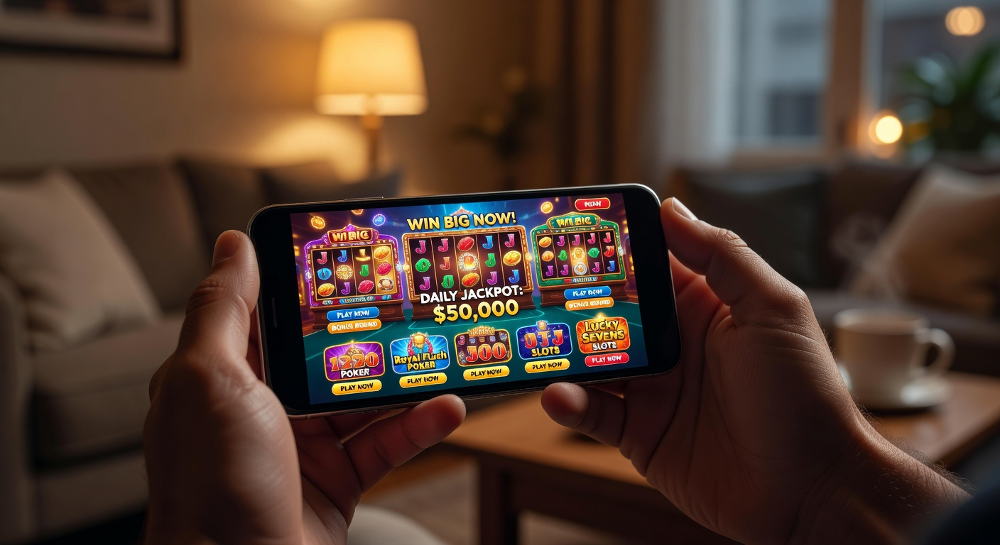
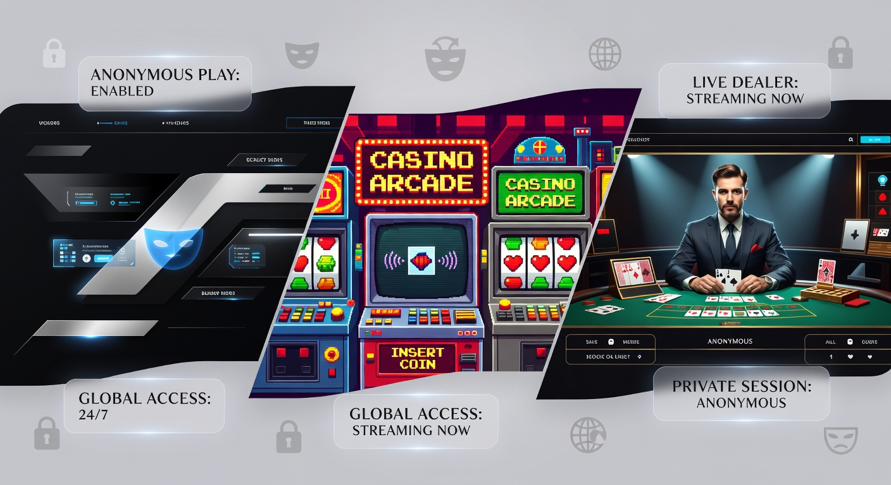
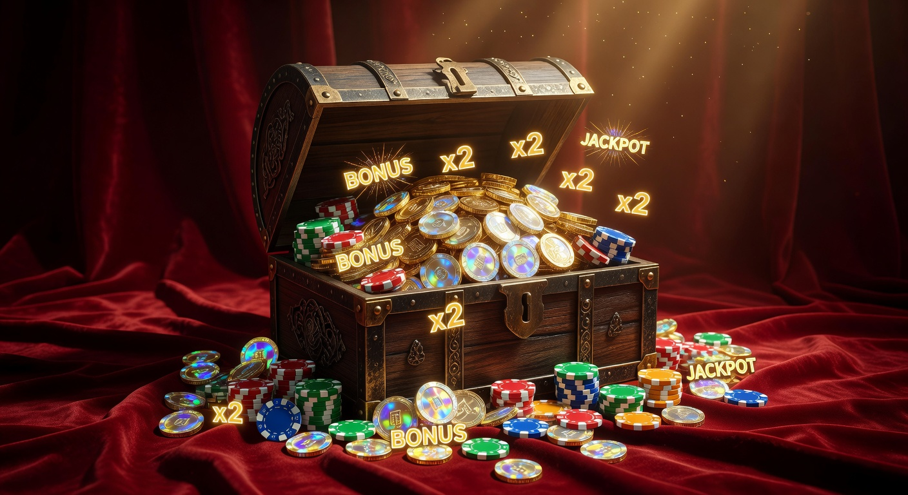
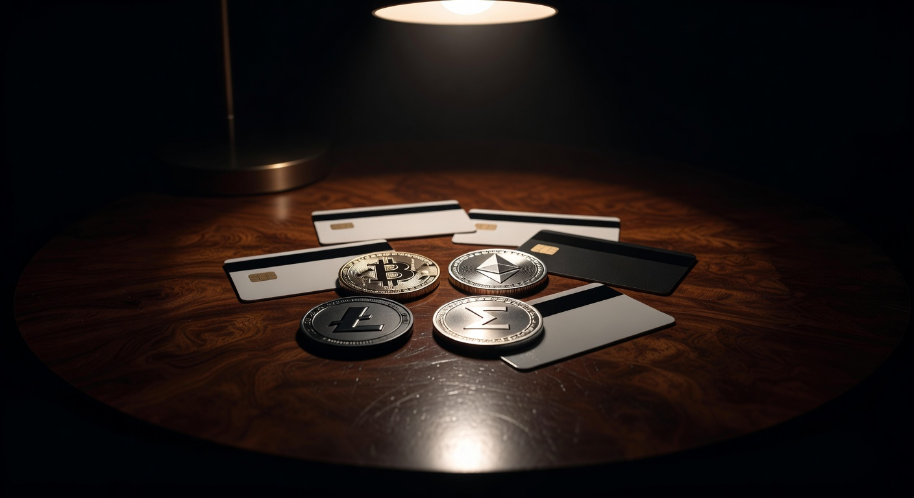
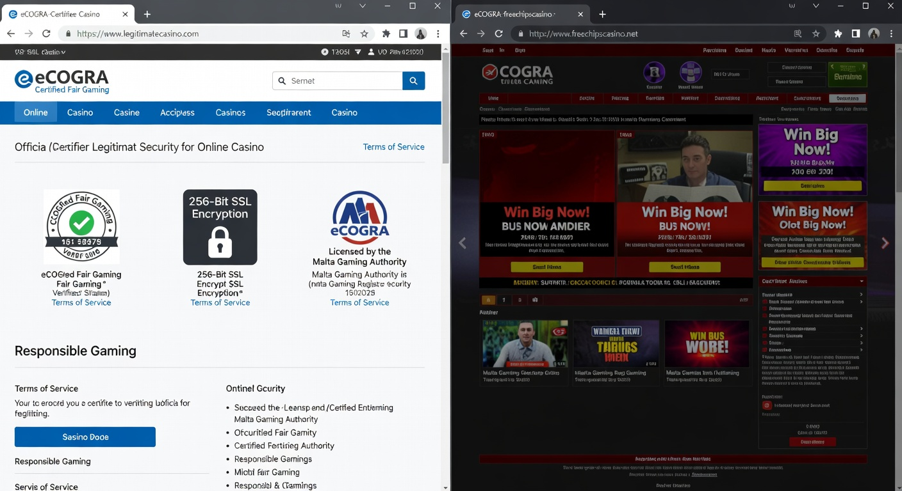

Casino Senza Documenti: Guida ai Migliori Siti Senza Verifica del 2026
Nel panorama del gioco d'azzardo digitale del 2026, l'esigenza di immediatezza e riservatezza ha portato alla ribalta il concetto di casino senza documenti. Questi portali rappresentano l'evoluzione tecnologica richiesta dai giocatori italiani che desiderano accedere alle proprie slot preferite senza dover affrontare lunghe trafile burocratiche per la verifica dell'identità. La possibilità di depositare e iniziare a giocare in pochi secondi è diventata lo standard qualitativo per chi cerca un'esperienza fluida e moderna.
Le piattaforme che operano in questo settore sfruttano tecnologie all'avanguardia per garantire la sicurezza delle transazioni senza la necessità del tradizionale invio della carta d'identità. Questo approccio non solo velocizza l'accesso al divertimento, ma protegge anche la privacy dell'utente, limitando la condivisione di dati sensibili su server centralizzati. In questa guida completa, esploreremo come funzionano questi siti e quali sono le migliori opzioni disponibili nel 2026 per i giocatori residenti in Italia.
Molti utenti oggi preferiscono un prelievo bitcoin casino proprio per mantenere questa discrezione finanziaria. La combinazione tra asset digitali e piattaforme che non richiedono la convalida manuale dei documenti ha creato un ecosistema estremamente efficiente. Vedremo nel dettaglio come navigare in questo mondo in totale sicurezza, analizzando bonus, licenze e i migliori provider del settore.
Cosa si intende per casino online senza invio di documenti?
L'espressione casino senza documenti identifica tutte quelle sale da gioco virtuali che consentono l'iscrizione, il deposito e, in molti casi, il prelievo delle vincite senza richiedere preventivamente l'invio di scansioni di documenti d'identità (KYC - Know Your Customer). Nel 2026, questa modalità di gioco si è ramificata in diverse tecnologie, dai sistemi Pay N Play basati su protocolli bancari sicuri alle piattaforme basate interamente sulla blockchain.
In un contesto tradizionale, un operatore richiede la verifica del conto entro 30 giorni per evitare il blocco dell'account. Nei siti di nuova generazione, invece, l'identificazione avviene in modo implicito tramite il metodo di pagamento utilizzato o non viene richiesta affatto per importi che rientrano in determinate soglie di sicurezza. Questo elimina i tempi di attesa, che solitamente variavano dalle 24 alle 72 ore, permettendo un accesso istantaneo al catalogo di gioco.
È importante sottolineare che la mancanza di richiesta documenti non significa assenza di regole. Questi operatori operano comunque sotto licenze internazionali che garantiscono l'equità dei giochi e la protezione dei fondi. Semplicemente, il processo di onboarding è stato ottimizzato per le esigenze del giocatore contemporaneo, eliminando gli attriti tipici della vecchia burocrazia digitale.
La differenza tra casinò ADM e siti con licenza estera
In Italia, la distinzione principale rimane tra i siti regolamentati dall'Agenzia delle Accise, Dogane e Monopoli (ADM/AAMS) e quelli con licenze internazionali come Curacao o Malta. I siti ADM sono obbligati per legge a richiedere un documento d'identità valido e il codice fiscale per ogni nuovo iscritto. Questo processo è finalizzato al controllo del gioco d'azzardo e alla prevenzione del riciclaggio di denaro, ma può risultare lento per molti utenti.
Al contrario, un casino senza documenti solitamente opera con licenze non-AAMS. Questi siti offrono una maggiore flessibilità. Mentre l'ADM impone limiti stringenti sulle puntate e sui tempi di deposito, le piattaforme estere permettono un'esperienza di gioco più libera. Molti giocatori italiani scelgono un casino curacao online per via della vasta gamma di bonus e della possibilità di giocare senza dover caricare file sensibili sul portale.
Tuttavia, la sicurezza non viene meno. Le licenze internazionali del 2026 impongono standard crittografici elevatissimi. La differenza risiede nel metodo di verifica: mentre l'ADM punta sulla verifica dell'identità fisica, i siti internazionali puntano sulla verifica della proprietà del metodo di pagamento, rendendo l'esperienza molto più snella per chiunque desideri giocare online senza complicazioni.
Perché la privacy è diventata una priorità per i giocatori italiani
Nel 2026, la consapevolezza digitale è ai massimi storici. I casi di furto d'identità e i leak di database sensibili hanno reso i giocatori molto cauti nel condividere foto dei propri documenti d'identità o passaporti. Utilizzare un casino senza documenti riduce drasticamente il rischio che i propri dati personali finiscano nelle mani sbagliate in caso di attacco informatico ai server dell'operatore.
Oltre alla sicurezza informatica, esiste una questione di privacy finanziaria. Molti utenti desiderano che le proprie attività di svago non appaiano negli estratti conto bancari tradizionali o che non siano tracciate in modo invasivo. L'uso di criptovalute e portafogli elettronici anonimi, abbinato a siti senza verifica, permette di gestire il proprio budget in totale discrezione, separando il gioco dalle finanze personali principali.
Infine, la semplicità d'uso gioca un ruolo fondamentale. In un mondo che corre veloce, aspettare l'approvazione di un dipendente del servizio clienti per poter prelevare 100 euro è considerato un anacronismo. La privacy si sposa con l'efficienza: meno dati si scambiano, più velocemente avvengono le transazioni, migliorando sensibilmente la soddisfazione dell'utente finale.
Vantaggi del giocare senza procedura KYC

I benefici di scegliere un casino senza documenti sono molteplici e toccano diversi aspetti dell'esperienza dell'utente. Il vantaggio più evidente è, senza dubbio, il risparmio di tempo. Non dover cercare il documento, scansionarlo o fotografarlo con lo smartphone, e poi attendere che venga verificato, significa poter iniziare a puntare sulla propria slot preferita in meno di due minuti dalla prima visita al sito.
Un altro punto di forza riguarda l'accessibilità globale. Questi siti accettano spesso utenti da diverse giurisdizioni senza le barriere regionali imposte da altri regolatori. Inoltre, l'assenza di KYC permette di testare diverse piattaforme con estrema facilità. Se un sito non soddisfa le aspettative, il giocatore può semplicemente spostare i propri fondi altrove senza lasciare tracce documentali ingombranti su decine di database diversi.
Infine, queste piattaforme sono spesso pioniere nell'adozione di nuove tecnologie. Dal supporto per il Web3 alle interfacce ottimizzate per i dispositivi VR del 2026, i casinò che scelgono di non richiedere documenti sono solitamente quelli più orientati all'innovazione tecnologica, offrendo prodotti di gioco superiori in termini di grafica, RTP e varietà di mercati disponibili.
Registrazione immediata e accesso rapido
Dimenticate i lunghi moduli di iscrizione che chiedono indirizzo di residenza, codice fiscale e numero di telefono. Nei migliori casino senza documenti del 2026, la registrazione è ridotta all'osso. Spesso è sufficiente inserire un indirizzo email e una password, oppure collegare un wallet di criptovalute. In alcuni casi, come nei siti Pay N Play, non esiste nemmeno un form di registrazione tradizionale: il conto viene creato automaticamente al primo deposito.
Questa velocità d'azione è fondamentale per chi gioca da mobile. In mobilità, non sempre si ha a disposizione il tempo o la calma per compilare decine di campi di testo. Un click, un deposito tramite TouchID o FaceID, e il gioco è pronto. Questa fluidità ha ridefinito il concetto di "gioco istantaneo", portando l'industria verso livelli di efficienza mai visti prima negli anni precedenti.
La rapidità di accesso non compromette la sicurezza. Anche senza documenti, i siti utilizzano sistemi di tracciamento IP e impronte digitali del dispositivo per garantire che l'account sia protetto da accessi non autorizzati. Il risultato è un perfetto equilibrio tra usabilità estrema e protezione dell'account utente.
Prelievi istantanei senza attese burocratiche
Il vero test per ogni casino senza documenti è il momento del prelievo. Nei siti tradizionali, è qui che iniziano i problemi: richieste di documenti aggiuntivi, foto "selfie" con il documento in mano, prove di residenza. Nelle piattaforme senza verifica del 2026, il prelievo è spesso automatico. Una volta che l'utente richiede di incassare le vincite, il sistema elabora la transazione istantaneamente attraverso la blockchain o i portafogli elettronici.
Questo è possibile perché la legittimità dell'utente è stata già stabilita attraverso il metodo di pagamento utilizzato. Se hai depositato con un wallet verificato, il casinò assume che tu sia il legittimo proprietario dei fondi. Per ottenere un prelievo immediato skrill, ad esempio, è sufficiente che il proprio account Skrill sia attivo; il casinò non richiederà ulteriori prove d'identità se non in casi eccezionali di attività sospette.
Avere la certezza che una vincita possa essere spesa o spostata sul proprio conto nel giro di pochi minuti cambia radicalmente l'approccio psicologico al gioco. Non c'è più l'ansia che il prelievo venga bloccato per motivi tecnici o burocratici, aumentando drasticamente la fiducia tra il giocatore e l'operatore online.
Esperienza di gioco senza restrizioni di autoesclusione
Un aspetto tecnico rilevante dei casino senza documenti è la loro indipendenza dai registri nazionali di autoesclusione, come quello gestito dall'ADM in Italia. Sebbene l'autoesclusione sia uno strumento vitale per il gioco responsabile, talvolta un giocatore può trovarsi iscritto per errore o desiderare di tornare a giocare dopo un periodo di riflessione, riscontrando però difficoltà burocratiche a riattivare i propri profili nazionali.
I siti internazionali permettono di gestire il proprio accesso in modo autonomo. Offrono strumenti interni di limitazione (limiti di deposito, sessioni a tempo), ma non sono collegati al database centrale AAMS. Questo garantisce una libertà d'azione superiore, a patto che l'utente mantenga un approccio disciplinato e responsabile verso l'attività ludica.
È fondamentale ricordare che, pur senza documenti, la responsabilità del gioco rimane in capo all'utente. Le piattaforme di qualità offrono sempre opzioni per impostare limiti personali direttamente dal pannello di controllo, permettendo un'esperienza di gioco personalizzata e sicura, senza le imposizioni rigide dei sistemi statali che talvolta possono risultare eccessivamente castranti per il giocatore occasionale.
Tipologie di piattaforme che non richiedono l'identità

Non tutti i casino senza documenti sono uguali. Nel 2026, abbiamo assistito a una specializzazione tecnologica che ha creato tre categorie principali di operatori. Ognuna di queste utilizza un metodo differente per garantire l'anonimato o la velocità burocratica, offrendo vantaggi specifici a seconda delle preferenze del giocatore. Conoscere queste differenze è essenziale per scegliere il sito più adatto alle proprie necessità di gioco e privacy.
Le tre tipologie dominanti sono i Crypto Casino, i sistemi Pay N Play e i casinò a registrazione rapida. Ognuno di questi modelli ha rivoluzionato il modo in cui pensiamo alla verifica dell'identità online. Mentre i primi puntano tutto sulla decentralizzazione della blockchain, gli altri due cercano di mediare tra la comodità dei sistemi bancari moderni e la velocità richiesta dagli utenti odierni.
Indipendentemente dalla tipologia scelta, il filo conduttore resta l'eliminazione del caricamento di file PDF o foto di documenti d'identità. In questo senso, l'industria si è mossa verso una "verifica silente" o "verifica tramite terze parti fidate", dove l'identità è già stata confermata dalla banca o dal provider del wallet, sollevando il casinò dall'onere di gestire dati sensibili degli utenti.
Crypto Casino: l'anonimato della blockchain
I Crypto Casino sono i leader indiscussi nel settore del gioco senza documenti. Nel 2026, queste piattaforme accettano non solo Bitcoin ed Ethereum, ma anche una vasta gamma di stablecoin e token specializzati. Poiché la blockchain è per sua natura uno pseudo-anonima, l'operatore non ha bisogno di conoscere il nome reale del giocatore per permettergli di scommettere. Tutto ciò che serve è un indirizzo di portafoglio elettronico.
Questi siti offrono spesso i vantaggi del "Provably Fair", una tecnologia che permette al giocatore di verificare matematicamente che ogni giro di slot o mano di blackjack sia stato generato in modo casuale e non manipolato. Questo livello di trasparenza, unito all'assenza di KYC, rende i Crypto Casino la scelta preferita per i puristi della tecnologia e della privacy che cercano un casino senza documenti affidabile.
Un esempio eccellente di questa categoria è Dragonia, un portale che ha fatto dell'integrazione blockchain il suo punto di forza, offrendo transazioni quasi istantanee e una libreria di giochi vastissima senza mai chiedere informazioni personali invasive ai propri iscritti.
Sistemi Pay N Play tramite Trustly
Il sistema Pay N Play, reso celebre da Trustly, è la risposta europea al bisogno di velocità. In questo modello, il casino senza documenti interagisce direttamente con la tua banca online. Quando effettui un deposito, la banca trasmette in modo sicuro i dati necessari (come la conferma della maggiore età) all'operatore, senza che l'utente debba compilare alcun modulo o inviare scansioni cartacee.
Questo metodo è estremamente popolare perché combina la sicurezza del sistema bancario tradizionale con la velocità del gioco istantaneo. I prelievi vengono accreditati direttamente sul conto corrente utilizzato per depositare, spesso in meno di 5 minuti. È la soluzione ideale per chi non vuole utilizzare criptovalute ma desidera comunque evitare le complicazioni della registrazione classica.
Sebbene molto diffuso nei mercati scandinavi e in Germania, nel 2026 questo sistema ha preso piede anche tra i giocatori italiani, grazie alla partnership con le principali banche digitali nazionali che supportano i pagamenti istantanei e la condivisione sicura delle credenziali di verifica.
Casinò con registrazione tramite social o e-mail veloce
L'ultima categoria riguarda le piattaforme che semplificano il processo permettendo l'accesso tramite account Google, social media o semplicemente un'email con conferma tramite codice temporaneo (OTP). In questo caso, il casino senza documenti posticipa o elimina del tutto la verifica per la maggior parte delle operazioni. Questi siti sono spesso i più generosi in termini di bonus, poiché puntano a un'acquisizione utente massiva e veloce.
Questi operatori si concentrano sulla "gamification" dell'esperienza. L'utente entra, sceglie un avatar, e può iniziare subito a giocare. Spesso offrono bonus slot senza invio documenti per permettere di provare i software prima di impegnare capitali importanti. È una modalità molto apprezzata dai giocatori occasionali che vogliono solo passare qualche ora di divertimento senza pensieri.
Tra questi si distingue Divaspin, che offre un'interfaccia intuitiva e una procedura di iscrizione che richiede letteralmente meno di 30 secondi, rendendolo perfetto per chi odia i lunghi form digitali.
Bonus e promozioni disponibili senza verifica

Contrariamente a quanto si possa pensare, scegliere un casino senza documenti non significa rinunciare ai bonus. Al contrario, queste piattaforme competono in un mercato globale estremamente aggressivo e tendono a offrire pacchetti di benvenuto molto più sostanziosi rispetto ai siti regolamentati localmente. Nel 2026, i bonus sono diventati dinamici, adattandosi allo stile di gioco dell'utente in tempo reale.
Le promozioni spaziano dal classico raddoppio del primo deposito a offerte molto specifiche come i giri gratis (free spins) su slot di tendenza. Poiché i costi operativi di un casinò senza KYC sono spesso inferiori (grazie all'automazione dei controlli), questi risparmi vengono spesso girati ai giocatori sotto forma di cashback più elevati o requisiti di scommessa (wagering) più equi e raggiungibili.
Un aspetto interessante è la rapidità con cui questi bonus vengono accreditati. Non dovendo attendere la convalida del documento, il bonus di benvenuto è immediatamente disponibile per l'uso subito dopo il deposito, permettendo di aumentare il bankroll iniziale fin dal primo secondo di gioco.
Bonus di benvenuto per i nuovi iscritti
Il bonus benvenuto senza documenti è il biglietto da visita di ogni piattaforma. Di solito, si tratta di una combinazione tra una percentuale di bonus sul deposito (che può arrivare anche al 200% o 500% nei crypto casino) e un pacchetto di free spins. Nel 2026, molti siti offrono pacchetti frazionati sui primi 3 o 4 depositi, incentivando la fedeltà del giocatore fin dall'inizio.
Ad esempio, il sito Millioner è noto per il suo pacchetto di benvenuto esplosivo, che non richiede alcuna verifica d'identità per essere attivato. I giocatori possono raddoppiare istantaneamente il loro capitale e iniziare a puntare su titoli famosi di provider come NetEnt o Pragmatic Play.
È sempre consigliabile leggere i termini e le condizioni, ma in generale, questi bonus sono progettati per essere semplici da capire. L'assenza di burocrazia si riflette anche nei regolamenti promozionali, che tendono a essere più lineari e privi di clausole scritte in piccolo che potrebbero confondere l'utente meno esperto.
Giri gratis e cashback settimanale
Per gli amanti delle slot, i free spin senza deposito immediato senza documenti non aams sono la promozione più ricercata. Consentono di provare le ultime novità del mercato, come le evoluzioni di Book of Dead o Starburst, senza rischiare il proprio denaro. Questi giri omaggio vengono spesso accreditati settimanalmente per premiare i giocatori attivi, mantenendo alto il livello di coinvolgimento.
Il cashback è l'altra colonna portante delle promozioni in un casino senza documenti. Si tratta di un rimborso di una percentuale delle perdite nette (solitamente tra il 10% e il 25%) che viene accreditato direttamente sul conto, spesso come denaro reale senza requisiti di puntata. Questo sistema ammortizza la sfortuna e permette di avere sempre una seconda possibilità di vittoria.
Piattaforme come Roulettino hanno implementato sistemi di cashback automatico che calcolano il rimborso ogni lunedì, offrendo ai giocatori un incentivo costante per continuare la loro esperienza di gioco in modo sereno e protetto.
Programmi VIP e fedeltà per giocatori ricorrenti
Anche senza fornire documenti d'identità, il casinò è in grado di tracciare la tua attività di gioco tramite l'ID utente. Questo permette l'esistenza di programmi VIP molto sofisticati. Nel 2026, i programmi fedeltà in un casino senza documenti includono manager personali (contattabili via Telegram o Signal per mantenere la privacy), limiti di prelievo aumentati e regali esclusivi sotto forma di NFT o bonus personalizzati.
I livelli VIP si scalano semplicemente giocando. Più volume di gioco si genera, più si sale di livello, sbloccando vantaggi sempre più concreti. In molti casi, gli utenti VIP godono di prelievi prioritari che vengono elaborati in pochi secondi da sistemi automatizzati dedicati esclusivamente a loro.
Siti come Wyns eccellono in questo, offrendo un'esperienza d'élite a chi decide di fare della piattaforma il proprio porto sicuro per il gioco d'azzardo online, garantendo discrezione assoluta e trattamenti di lusso digitale.
Metodi di pagamento consigliati per mantenere l'anonimato

La scelta del metodo di pagamento è cruciale quando si gioca in un casino senza documenti. Il metodo utilizzato è ciò che definisce il grado di privacy e la velocità delle transazioni. Nel 2026, i canali finanziari tradizionali come i bonifici bancari sono spesso evitati dai giocatori che cercano la massima riservatezza, a favore di soluzioni digitali decentralizzate o sistemi di voucher prepagati che non lasciano tracce dirette verso il casinò.
L'integrazione tra fintech e gambling ha creato soluzioni ibride molto interessanti. Oggi è possibile utilizzare app di pagamento che fungono da ponte tra la propria banca e il casinò, mascherando la natura della transazione e garantendo al contempo che i fondi arrivino istantaneamente. La sicurezza è garantita da protocolli di crittografia end-to-end che rendono praticamente impossibile l'intercettazione dei dati finanziari.
Vediamo nel dettaglio quali sono le opzioni più sicure e performanti per alimentare il proprio conto di gioco senza dover mai inviare una foto della propria carta di credito o del proprio estratto conto per la verifica manuale.
Bitcoin e altre criptovalute
Le criptovalute rimangono il re incontrastato dell'anonimato. Utilizzare Bitcoin (BTC), Ethereum (ETH), Litecoin (LTC) o Tether (USDT) in un casino senza documenti garantisce che nessuna banca o ente centrale possa monitorare i tuoi flussi di cassa verso il gioco. Le transazioni avvengono peer-to-peer, il che significa che i soldi passano direttamente dal tuo wallet al casinò e viceversa.
Nel 2026, l'uso delle crypto è diventato semplicissimo grazie a wallet integrati nei browser e app mobile intuitive. Molti casinò offrono anche la possibilità di acquistare criptovalute direttamente sul sito tramite carta di credito, facilitando il compito a chi non possiede ancora asset digitali. Tuttavia, per il massimo della privacy, è sempre meglio inviare i fondi da un wallet privato esterno.
Inoltre, i limiti di deposito e prelievo con le criptovalute sono solitamente molto più alti (o del tutto assenti) rispetto ai metodi tradizionali. Questo rende i crypto casino la scelta ideale per gli "high roller" che vogliono muovere somme importanti in totale discrezione. Se sei interessato a questo metodo, ti consigliamo di consultare la nostra lista di casinò non aams deposito 10 euro per iniziare con un investimento contenuto.
Portafogli elettronici e voucher prepagati
Se non vuoi utilizzare le criptovalute, gli e-wallet come Skrill, Neteller o MiFinity sono alternative eccellenti. Sebbene questi provider richiedano a loro volta una verifica dell'identità, il casino senza documenti riceverà solo i fondi e non i tuoi dati sensibili. Questo crea uno strato protettivo tra la tua identità reale e l'operatore di gioco.
I voucher prepagati come Paysafecard o Neosurf offrono un livello di anonimato ancora superiore. Puoi acquistarli in contanti in tabaccheria o online e inserire semplicemente il codice a 16 cifre sul sito del casinò. In questo modo, non c'è alcun collegamento digitale tra il tuo conto bancario e l'attività di gioco. È il metodo più simile all'utilizzo dei contanti in un casinò fisico di Sanremo o Venezia.
L'unico svantaggio dei voucher è che non possono essere utilizzati per i prelievi. Per incassare le vincite, dovrai solitamente fornire un indirizzo di portafoglio elettronico o un conto bancario. Tuttavia, per molti giocatori, l'anonimato in fase di deposito è già sufficiente per garantire la tranquillità desiderata.
Sicurezza e legalità: a cosa prestare attenzione

Giocare in un casino senza documenti richiede una maggiore attenzione da parte dell'utente nella fase di selezione del sito. Non potendo contare sulla "bollina" ADM, è necessario verificare personalmente l'affidabilità dell'operatore. Nel 2026, la reputazione online è la moneta più preziosa: un casinò che truffa i propri utenti viene rapidamente segnalato e messo al bando dalle comunità di giocatori.
La sicurezza non riguarda solo l'equità dei giochi, ma anche la protezione dei fondi e dei dati tecnici. Un sito affidabile deve utilizzare protocolli HTTPS aggiornati e disporre di un certificato SSL (Secure Sockets Layer) valido. Questo garantisce che ogni informazione scambiata tra il tuo computer e il server del casinò sia criptata e inaccessibile a terzi.
Un altro aspetto fondamentale è il software. I migliori siti collaborano con provider di fama mondiale come Microgaming, Play'n GO o Evolution Gaming. Questi giganti del settore non offrirebbero mai i loro giochi a operatori poco seri, poiché devono proteggere la propria licenza e reputazione globale. La presenza di giochi di marca è quindi un ottimo indicatore di qualità.
Verificare la validità della licenza (Curacao, MGA)
Anche se un casinò non richiede documenti, deve possedere una licenza di gioco valida. Le più comuni nel 2026 per i casino senza documenti sono quelle rilasciate dal governo di Curacao (tramite vari Master Licensee come Antillephone o Gaming Curacao) e dalla Malta Gaming Authority (MGA). Quest'ultima è considerata la più prestigiosa in Europa e offre garanzie molto elevate per i giocatori.
Puoi verificare la licenza cliccando sul logo dell'autorità di regolamentazione solitamente presente nel footer (la parte bassa) del sito web del casinò. Se il link ti rimanda a una pagina ufficiale di convalida che mostra lo stato "Active", puoi essere ragionevolmente certo che il casinò stia operando legalmente sotto la supervisione di un ente regolatore.
La licenza di Curacao, in particolare, è diventata molto rigorosa negli ultimi anni, imponendo test regolari sull'RTP (Return to Player) e sulla casualità dei generatori di numeri (RNG). Questo assicura che il casino senza documenti non possa truccare i giochi a proprio vantaggio, garantendo un ambiente di gioco onesto e trasparente.
Protezione dei dati e protocolli SSL
In un mondo digitale, la protezione dei dati è fondamentale. Anche se non invii il documento, il casinò gestisce comunque i tuoi dati di login e la cronologia delle transazioni. Un casino senza documenti di alta qualità investe pesantemente in infrastrutture di sicurezza. Cerca sempre l'icona del lucchetto nella barra degli indirizzi del browser: indica che la connessione è sicura.
Nel 2026, i migliori portali utilizzano l'autenticazione a due fattori (2FA). Ti consigliamo vivamente di attivarla se disponibile: aggiunge un ulteriore strato di sicurezza richiedendo un codice dal tuo smartphone per ogni accesso o prelievo. Questo rende il tuo account praticamente impenetrabile, anche se qualcuno dovesse scoprire la tua password.
Infine, controlla la politica sulla privacy del sito. Un operatore onesto dichiara chiaramente come vengono utilizzati i dati raccolti (solitamente per scopi analitici e di marketing interno) e garantisce che non verranno mai venduti a terzi. La trasparenza in questo ambito è sinonimo di professionalità e rispetto per l'utente.
Come iniziare a giocare in 3 semplici passaggi
Avvicinarsi a un casino senza documenti è un processo estremamente intuitivo, studiato appositamente per chi non vuole perdere tempo. A differenza dei siti tradizionali, dove la registrazione può richiedere anche 15 minuti, qui l'intera procedura è ottimizzata per essere completata in pochi click. Se hai già pronto un metodo di pagamento, sarai pronto a giocare in meno di tre minuti.
- Scegli un casinò affidabile dalla nostra lista: Seleziona una delle piattaforme consigliate, come Kinbet, che garantisce sicurezza e anonimato. Clicca sul tasto di registrazione rapida.
- Effettua il primo deposito: Inserisci l'importo che desideri versare e scegli il tuo metodo preferito (Crypto, E-wallet o Voucher). Se c'è un bonus di benvenuto, assicurati di selezionarlo in questa fase.
- Inizia a giocare: Una volta confermata la transazione, i fondi appariranno istantaneamente sul tuo conto. Naviga nel catalogo, scegli la tua slot o il tavolo da live casino preferito e divertiti!
Ricorda che, sebbene non servano documenti per iniziare, è sempre bene registrarsi con un indirizzo email reale a cui hai accesso. Questo ti servirà per recuperare la password in caso di smarrimento o per ricevere comunicazioni importanti riguardanti i tuoi prelievi. La semplicità non deve mai andare a discapito della corretta gestione del proprio account personale.
50 Free Spin Senza Deposito - L'Offerta Più Ricercata
Tra tutte le promozioni che un casino senza documenti può offrire, quella dei 50 free spin senza deposito è indubbiamente la più amata nel 2026. Questa offerta permette ai giocatori di ricevere 50 giri gratuiti su una slot machine specifica semplicemente creando un account, senza dover versare nemmeno un euro. È il modo perfetto per testare la velocità della piattaforma e la qualità dei giochi senza alcun rischio finanziario.
Solitamente, questi giri vengono accreditati su titoli popolari come Gates of Olympus o le nuove uscite di Pragmatic Play. È un'ottima opportunità per vedere come si comporta il sito: se i giri vengono accreditati subito e se l'interfaccia è fluida, è un buon segno sulla serietà dell'operatore. Se riesci a vincere qualcosa, potrai testare anche la procedura di prelievo (anche se solitamente per prelevare le vincite da bonus senza deposito è richiesto un piccolo deposito di verifica del metodo di pagamento).
Bisogna sempre prestare attenzione al "cap" sulle vincite, ovvero il limite massimo che si può prelevare derivante dai free spin gratuiti. Tuttavia, resta un'opportunità imperdibile per chi cerca un bonus slot senza invio documenti e vuole divertirsi senza impegni immediati. Molte di queste offerte sono limitate nel tempo, quindi quando ne trovi una attiva su siti come Millioner, conviene approfittarne subito.
Pro e Contro dei Casinò Senza Verifica
Come ogni scelta nel mondo del gioco online, optare per un casino senza documenti comporta sia benefici che potenziali svantaggi. È importante avere una visione equilibrata per decidere se questa modalità di gioco si adatta al proprio profilo di rischio e alle proprie abitudini personali. Nel 2026, la bilancia pende decisamente verso i pro per la maggior parte degli utenti, ma è doveroso analizzare entrambi i lati della medaglia.
I punti a favore sono chiari: velocità, privacy e libertà. La possibilità di muoversi tra diverse piattaforme senza l'incubo burocratico della verifica è un valore aggiunto inestimabile per il giocatore moderno. Inoltre, l'accesso a mercati internazionali permette di trovare quote e giochi che spesso non sono disponibili sui circuiti nazionali più ristretti e controllati.
Dall'altro lato, bisogna considerare che la mancanza di un regolatore nazionale come l'ADM significa che, in caso di controversie gravi, il giocatore ha meno tutele legali dirette in Italia. Dovrà fare affidamento sulle autorità della giurisdizione della licenza (es. Curacao) o sulla reputazione del casinò stesso. Inoltre, la facilità di accesso potrebbe essere un rischio per chi soffre di ludopatia, rendendo ancora più importante l'autodisciplina.
| Caratteristica | Vantaggi (Pro) | Svantaggi (Contro) |
|---|---|---|
| Registrazione | Istantanea, niente moduli lunghi | Meno protezione contro il furto d'account se non si usa 2FA |
| Privacy | Anonimato elevato, nessun documento inviato | Minore tracciabilità in caso di indagini legali |
| Pagamenti | Prelievi immediati, uso di criptovalute | Alcuni metodi (es. carte italiane) potrebbero essere limitati |
| Bonus | Offerte più generose e frequenti | Termini di wagering talvolta più complessi |
| Responsabilità | Libertà totale di gestione | Assenza di collegamento al registro autoesclusione ADM |
Come selezioniamo i migliori casino online senza documenti
Per fornirti una lista affidabile nel 2026, il nostro team di esperti segue un processo di analisi rigoroso. Non ci limitiamo a guardare l'interfaccia grafica; scaviamo a fondo nei termini e condizioni e testiamo personalmente ogni funzione della piattaforma. Un casino senza documenti deve superare diversi test di stress prima di ricevere la nostra approvazione e raccomandazione ufficiale.
Il primo criterio è la velocità di pagamento. Effettuiamo depositi e prelievi con diversi metodi per assicurarci che le promesse di "istantaneità" siano mantenute. Se un sito dichiara di essere senza documenti ma poi blocca il primo prelievo chiedendo la carta d'identità senza un motivo di sicurezza valido, viene immediatamente scartato dalla nostra lista dei migliori.
Valutiamo poi la qualità del catalogo giochi. Cerchiamo siti che offrano le ultime novità di provider come NetEnt, Evolution e Microgaming, ma anche giochi "crash" e titoli basati su blockchain che sono di gran moda nel 2026. La varietà è fondamentale per garantire che ogni tipo di giocatore trovi ciò che cerca, dalle slot classiche ai tavoli di live poker più esclusivi.
Infine, testiamo il supporto clienti. Un buon casinò deve essere disponibile 24/7 tramite live chat. Anche se non servono documenti, possono sorgere dubbi tecnici o domande sui bonus. La velocità e la competenza della risposta sono indicatori chiari della serietà dell'operatore e del suo impegno verso la soddisfazione del cliente finale.
Confronto delle Migliori Slot Disponibili nel 2026
Nel 2026, il mondo delle slot machine ha raggiunto vette tecnologiche incredibili. Nei migliori casino senza documenti, puoi trovare titoli che integrano realtà aumentata, storie ramificate e jackpot progressivi che superano i milioni di euro. La competizione tra i provider ha portato a un innalzamento dell'RTP medio, rendendo il gioco più equo per l'utente.
Molti giocatori scelgono la slot senza documenti specifica per la sua meccanica di gioco. Le slot "Megaways" continuano a dominare il mercato con le loro migliaia di linee di vincita, ma stanno emergendo anche le slot "Cluster Pay" che offrono un'esperienza più simile ai moderni giochi mobile. La fluidità del software è garantita dall'uso di HTML5, che permette di giocare senza lag sia da desktop che da smartphone di ultima generazione.
Ecco una tabella comparativa di alcuni dei titoli più giocati del momento che puoi trovare sulle nostre piattaforme consigliate:
| Titolo Slot | Provider | RTP % | Volatilità | Caratteristica Speciale |
|---|---|---|---|---|
| Quantum Gold 2026 | NetEnt | 97.5% | Alta | Moltiplicatori infiniti |
| Book of Phoenix | Play'n GO | 96.8% | Media | Free Spins espandibili |
| Cyber Olympus | Pragmatic Play | 96.5% | Alta | Bonus Crab feature |
| Neon Dragon | Microgaming | 98.2% | Bassa | Jackpot progressivo istantaneo |
Questi giochi sono disponibili in modalità demo gratuita su siti come Wyns, permettendoti di fare pratica prima di passare alle scommesse con denaro reale. Ricorda sempre di controllare l'RTP specifico della slot nel casinò scelto, poiché alcuni operatori potrebbero variare leggermente questo parametro.
Considerazioni finali sul gioco responsabile
Giocare in un casino senza documenti offre una libertà senza precedenti, ma questa libertà deve essere accompagnata da una grande responsabilità personale. Nel 2026, l'industria ha fatto passi da gigante nel promuovere il gioco sano, ma l'utente rimane il primo responsabile del proprio benessere. È fondamentale stabilire un budget prima di iniziare e non superarlo mai, indipendentemente dall'andamento delle giocate.
Il gioco deve essere considerato una forma di intrattenimento, non un modo per fare soldi. Se senti che il controllo ti sta sfuggendo di mano, utilizza gli strumenti di autolimitazione messi a disposizione dai siti stessi. Anche i casinò senza documenti offrono opzioni per "prendersi una pausa" o impostare tetti massimi di deposito giornalieri, settimanali o mensili.
In conclusione, il 2026 è l'anno d'oro per chi cerca velocità e riservatezza. Con le giuste precauzioni e scegliendo operatori seri e licenziati, l'esperienza di gioco online può essere sicura, divertente e priva di inutili fardelli burocratici. Esplora le opzioni che abbiamo selezionato per te e trova oggi stesso il tuo casino senza documenti ideale.
Se desideri approfondire le tematiche della regolamentazione o consultare guide ufficiali, puoi visitare siti autorevoli come Wikipedia per una panoramica storica, o portali d'informazione finanziaria come Forbes per le ultime novità sull'integrazione delle criptovalute nei mercati globali del divertimento digitale.
Domande Frequenti (FAQ)
È legale giocare nei casinò senza invio di documenti in Italia?
Sebbene l'ADM richieda la verifica d'identità per i siti con licenza italiana, non esiste una legge che proibisca ai cittadini italiani di giocare su piattaforme internazionali regolarmente licenziate in altre giurisdizioni come Curacao o Malta. È responsabilità del giocatore assicurarsi di dichiarare eventuali vincite alle autorità competenti se richiesto dalla normativa fiscale vigente nel 2026.
Quanto tempo ci vuole per prelevare le vincite?
In un casino senza documenti che utilizza criptovalute o Pay N Play, i prelievi sono quasi istantanei, variando da pochi secondi a massimo 15-30 minuti. Se utilizzi portafogli elettronici, i tempi possono arrivare a 24 ore a seconda dell'elaborazione interna dell'operatore, ma restano drasticamente più brevi rispetto ai siti tradizionali.
Posso ottenere un bonus senza depositare e senza documenti?
Certamente. Molti siti offrono free spin senza deposito immediato senza documenti come incentivo per i nuovi iscritti. Basta registrarsi con un'email valida per ricevere i giri omaggio. Ti consigliamo di controllare regolarmente le offerte di siti come Kinbet o Divaspin per le promozioni più aggiornate.
I miei dati sono al sicuro se non invio i documenti?
Paradossalmente, i tuoi dati sono più sicuri perché ne condividi meno. Non inviando foto dei tuoi documenti d'identità, elimini il rischio che queste immagini sensibili vengano rubate o smarrite. La sicurezza del tuo conto è garantita dalla crittografia SSL del sito e dai sistemi di protezione dei metodi di pagamento che scegli di utilizzare.
Cosa succede se il casinò mi chiede i documenti all'improvviso?
Questo può accadere raramente in caso di transazioni insolitamente grandi (generalmente sopra i 2000-5000 euro) o attività che sembrano sospette ai sistemi anti-frode. In questi casi, il casinò è obbligato dalle normative internazionali anti-riciclaggio a chiedere una verifica. Tuttavia, per il giocatore medio e per importi standard, la promessa di "senza documenti" viene mantenuta fedelmente.